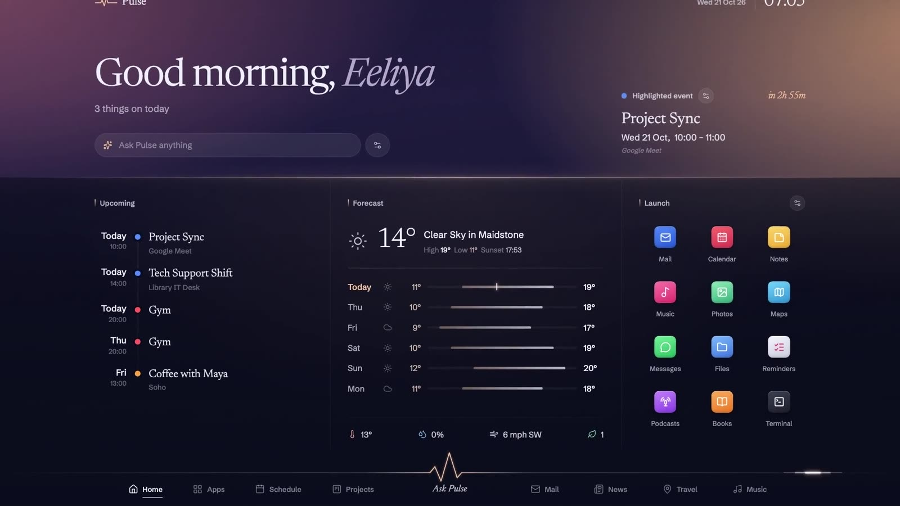
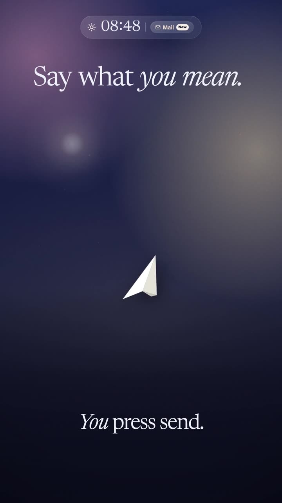
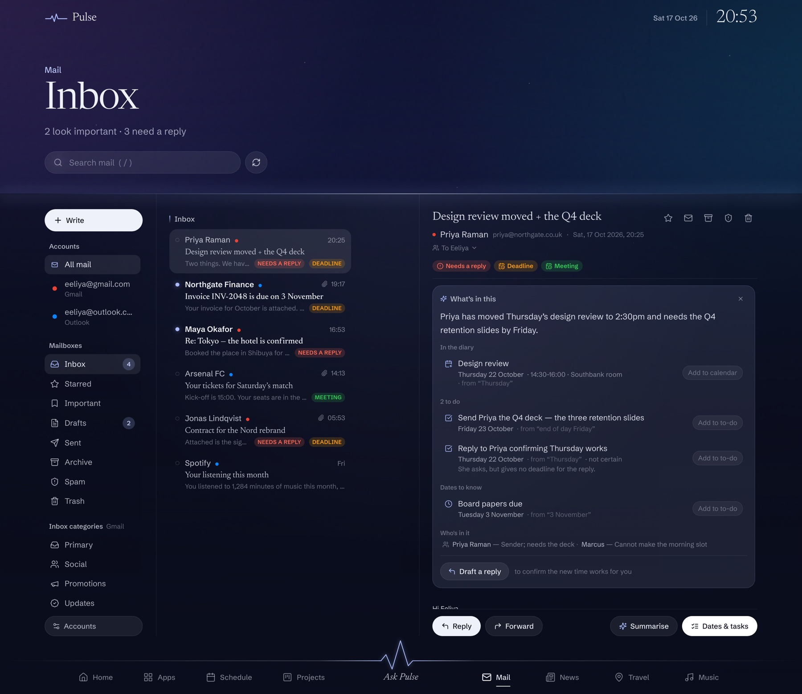
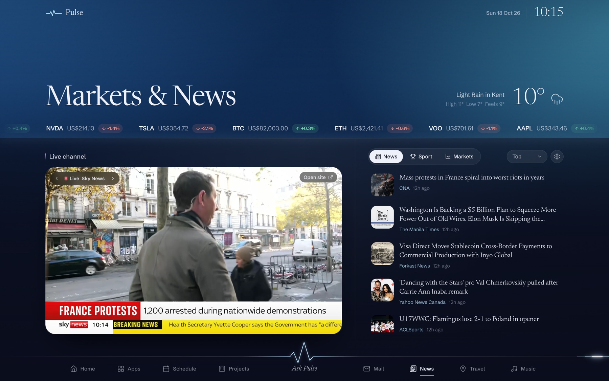
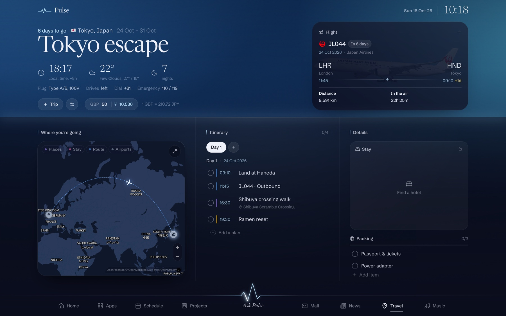
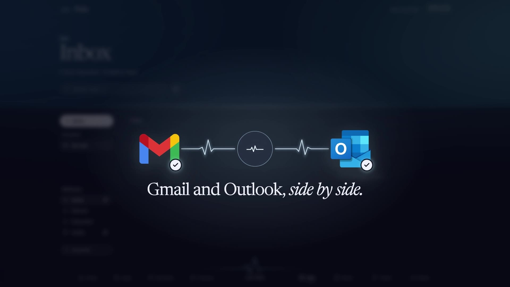

A dashboard for your whole day
Every day has a pulse.
Your plans, your mail, your projects, the weather, the news, your music and wherever you are headed — on one screen, lit by the hour you are actually in, with an assistant that can read all of it and act on it.


What it is
Nine apps' worth of your day,
in one place.
Pulse OS puts the things you check all day on a single screen and gives them one way of working. Ask it for something and it does it — moves the meeting, writes the reply, puts the card on the board — rather than telling you where to go and do it yourself.

What is on today, the forecast hour by hour, and everything you open most — under a sky that follows your clock.

Gmail and Outlook side by side. Pulse reads ahead, finds the dates, and puts them where they belong.

Boards that move, a timeline, and a table — the same cards, three ways of looking at them.

Google and Apple calendars together, the month at a glance and the day beside it.

A channel live in the corner, your watchlist ticking by, and your teams.

The flight tracked, the time and money there, and every day of the plan on the map.

Type it or say it. It reads your calendar, your mail and your boards, and it acts — it does not just answer.

Your Spotify built in, and a full screen lit by whatever is playing, lyrics right on time.
Updates
What changed, and why.
Every release is written up the same way: what moved, what broke, and what it took to fix. The last one gave Mail, Projects and Schedule places of their own.
All updates
One set of cards, three ways to look at them, and Ask Pulse able to work on the board itself.
Before that Schedule, rebuilt around the monthThe Life Hub became Schedule: the month leads, the day reads down the side, and to-dos come back until they are done.
Announcements
The bigger moments.
When something lands that changes how the whole thing feels, it gets written up properly — what it does, how it was built, and what it cost to get right.
Three places of their own, and a way for them to hand things to each other — a line in an email becomes a card, a date becomes a meeting.
Before that Your inbox, read aheadGmail and Outlook under one way of working, with the dates worked out in code rather than guessed by a model.